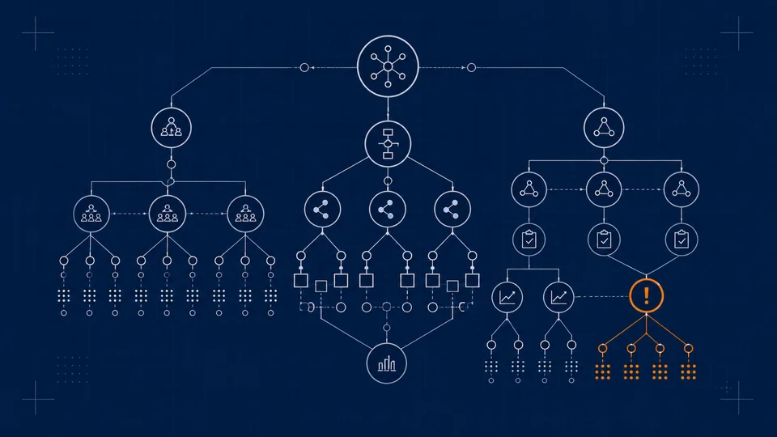
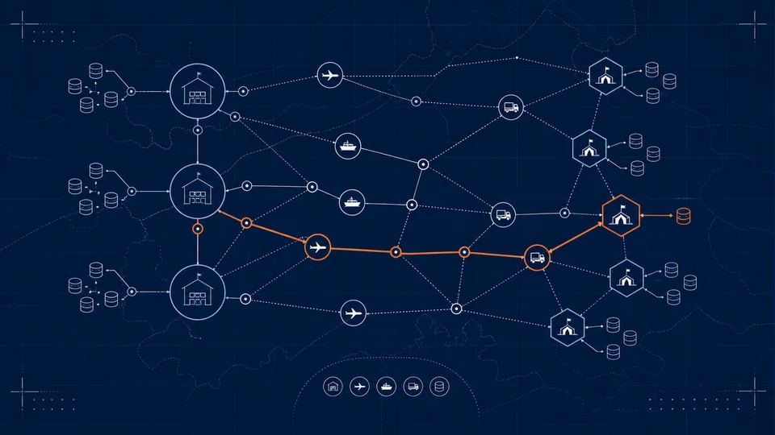
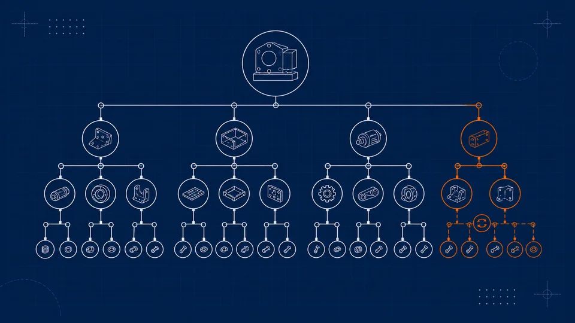
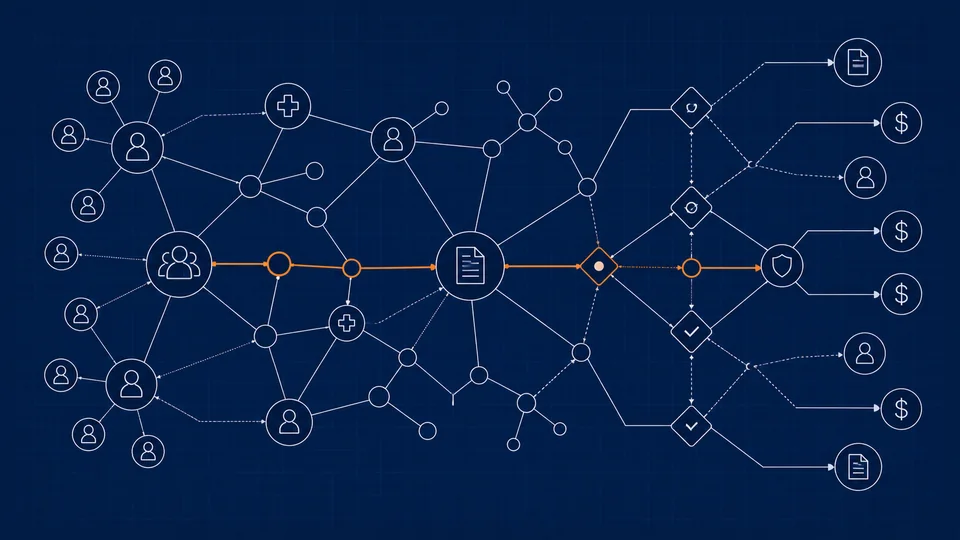
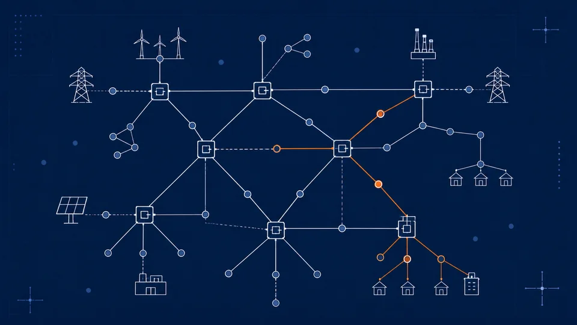

Domain pack
Aerospace supply graph
Tier-1 suppliers, sub-assemblies, and part lineage mapped end to end.
Reference model
Worked models you can open, read, and bootstrap into your own graph.
Pick a model and bootstrap it into your engine. Over-the-air refresh — keeping topology and reference data current without a manual re-import — is planned.
Tier-1 suppliers, sub-assemblies, and part lineage mapped end to end.

Protocols, arms, endpoints, and adverse-event links in one typed model.

Depots, lift assets, and resupply routes — designed to refresh over the air (planned).

Multi-level bill of materials with parts, variants, and substitution links.

Members, providers, claims, and coverage edges modelled for traversal.

Substations, lines, and load nodes — designed to re-sync over the air as the grid shifts (planned).
Tell us what you'd model. Good proposals become the next worked exploration in this library.